<!doctype html>
<meta charset="utf-8">
<style>
    @import url('https://fonts.googleapis.com/css2?family=Noto+Serif+KR&display=swap');

    body {
        margin: 0;
        padding: 10vw;
        font-family: sans-serif;
    }
    
    #bg {
        position: fixed;
        left: 0px;
        top: 0px;
        width: 100vw;
        height: 100vh;
        overflow: hidden;
        opacity: 0.2;
    }
    
    #content {
        position: absolute;
        left: 0px;
        top: 0px;
        width: 100vw;
    }
    
    h1 {
        font-size: 6vh;
        text-align: center;
    }
    
    p {
        font-size: 2.5vh;
        line-height: 1.5em;
    }
    
    .desc {
        margin-left: auto;
        margin-right: auto;
        width: 700px;
        color: slategray;
        text-align: left;
    }

    .story {
        margin-left: auto;
        margin-right: auto;
        width: 700px;
    }

    .story p {
        color: rgb(0, 0, 0);
        font-size: 2vh;
        text-align: left;
    }

    .whisper {
        color: rgb(124, 124, 124);
        font-size: 1.5vh;
        text-align: center;
    }

    .direction {
        color: rgb(12, 139, 33);
        font-size: 2vh;
        text-align: left;
        text-shadow: 0px 0px 10px #f5fe92;
    }
    
    strong {
        background-color: yellow;
        /* padding: 5px; */
        /* border-radius: 5px; */
    }
    
    hr {
        border: 1px dashed #b9d100;
        width: 700px;
    }
    
    .desc .magic {
        display: block;
        color: #3e86f8;
        margin-top: 15px;
        margin-bottom: 15px;
        font-style: italic;
        text-shadow: 0px 0px 5px #c1e0ff;
        text-align: center;
    }
    
    .hint {
        color: black;
        text-align: center;
    }
    
    .notice {
        color: #6c2aff;
        text-align: left;
        font-size: 1.5vh; 
    }
    
    .intro {
        color: dimgray;
        text-align: center;
    }

    .title {
        font-family: 'Noto Serif KR', serif;
        /* color: rgb(4, 84, 30); */
        color: rgb(12, 139, 33);
        text-align: center;
        text-shadow: 0px 0px 10px #f5fe92;
        font-size: 3vh;
    }

    .subtitle {
        font-family: 'Noto Serif KR', serif;
        color: rgb(12, 139, 33);
        text-align: center;
        text-shadow: 0px 0px 10px #f5fe92;
        font-size: 2.5vh;
    }
    
    .qr {
        height: 10vh;
        margin-bottom: 5vh;
    }
    
    .qr svg {
        -webkit-animation: rot 3s ease-in-out;
        animation: rot 3s ease-in-out;
    }
    
    .visual img {
        display: block;
        width: 700px;
        margin: auto;
        border-radius: 1vh;
        /* mix-blend-mode: multiply; */
        /* box-shadow: 0px 0px 20px white; */
        /* visibility: hidden; */
    }
    
    .bottom {
        width: 700px;
        margin: auto;
    }
    
    .found {
        text-align: center;
    }
    
    .got {
        margin: 5px 10px 5px 10px;
        padding: 3px;
        background-color: yellow;
        color: slategray;
        font-size: 2vh;
        border-radius: 10px;
    }
    
    .alert {
        color: red;
        text-align: left;
        font-size: 1.5vh; 
    }
    
    .solve {
        text-align: center;
        margin-top: 4vh;
        margin-bottom: 4vh;
    }
    
    .solve-riddle {
        text-align: center;
        margin: auto;
        padding: 10px 20px 10px 20px;
        /* width: 200px; */
        height: 4vh;
        line-height: 4vh;
        font-size: 3vh;
        border-radius: 15px;
        background-color: aquamarine;
        color: cadetblue;
        font-weight: bold;
        cursor: pointer;
        user-select: none;
    }
    
    .solve-riddle:active {
        background-color: aqua;
    }
    
    .solve-riddle a {
        text-decoration: none;
        color: cadetblue;
    }

    .listen-box {
        text-align: center;
        margin-top: 2vh;
        margin-bottom: 4vh;
    }

    .listen {
        text-align: center;
        margin: auto;
        padding: 10px 20px 10px 20px;
        height: 3vh;
        line-height: 3vh;
        font-size: 1.8vh;
        border-radius: 15px;
        background-color: aquamarine;
        color: cadetblue;
        font-weight: bold;
        cursor: pointer;
        user-select: none;
    }
    
    .listen:active {
        background-color: aqua;
    }
    
    @-webkit-keyframes appear {
        from { opacity: 0} to { opacity: 1 }
    }
    
    @keyframes appear {
        from { opacity: 0} to { opacity: 1 }
    }
    
    @-webkit-keyframes rot {
        from { transform: rotate(0deg)} to { transform: rotate(1080deg) }
    }
    
    @keyframes rot {
        from { transform: rotate(0deg)} to { transform: rotate(1080deg) }
    }
</style>
<body>
    <canvas id="bg"></canvas>
    <div id="content"></div>
</body>
<script src="./qrcode.min.js"></script>
<script>
    let el_bg = document.querySelector('#bg');
    let el_content = document.querySelector('#content');

    let el_stories = [];
    let el_epilogue = null;

    let stories = {};
    let focused = '';

    let audio = new Audio();
    
    let g = el_bg.getContext('2d');
    
    function layout() {
        g.canvas.width = innerWidth;
        g.canvas.height = innerHeight;
    }
    
    function init() {
        layout();
        
        let params = new URLSearchParams(location.search.slice(1));
        //let title = params.get('w');
        //let desc = '?';
        //let hint = '???';
        
        console.log(params.get('w'));
        
        switch(params.get('w')) {
            case 'A1_m9dc':
                localStorage.setItem('story1', 'found:' + Date.now());
                focused = 'story1';
                break;
            case 'A2_c50y':
                localStorage.setItem('story2', 'found:' + Date.now());
                focused = 'story2';
                break;
            case 'A3_p5y6':
                localStorage.setItem('story3', 'found:' + Date.now());
                focused = 'story3';
                break;
            case 'A4_06ch':
                localStorage.setItem('story4', 'found:' + Date.now());
                focused = 'story4';
                break;
        }
        
        let qrcode = new QRCode({
            content: location.href,
            ecl: 'L',
            padding: 0,
            width: 100,
            height: 100,
            color: '#000000',
            background: "#ffffff00",
        });
        
        let svg_str = qrcode.svg();
        
        /*
        localStorage.setItem(id, 'found:' + Date.now());
        
        let riddle = {
            A: '모자를 쓴,열매가,다닥다닥 붙은,나무는,무엇일까?'.split(','),
            B: '나,는,누구,일,까'.split(','),
            C: '나를,낳은,두 분,생각하는,날'.split(','),
        };
        
        let solved = '?,?,?,?,?'.split(',');
        
        let count_found = 0;
        let last_t = Number.MAX_SAFE_INTEGER;
        for(let i = 0; i < 5; i++) {
            let vt = localStorage.getItem(category + (i + 1));
            if(vt) {
                let [v, t] = vt.split(':');
                last_t = Math.min(last_t, Number(t));
                if(v === 'found') {
                    solved[i] = riddle[category][i]; 
                    count_found += 1;
                }  
            }
        }
        
        let elapsed = Date.now() - last_t;
        if(elapsed > 1000 * 3600 * 2) {
            localStorage.clear();
            localStorage.setItem(id, 'found:' + Date.now());
        }
        */

        let intro = `
        <div class="story">
            <div class="listen-box">
                <span class="listen" id="listent0">듣기</span>
            </div>
            <p>옛날 옛날, 작은 마을에 특별한 나무가 하나 있었어요. 이 나무는 다른 나무들과 달리 빛나는 나무였답니다. 그냥 햇빛에 반짝이는 그런 빛이 아니라, 진짜로 마법처럼 빛나는 나무랍니다! 그런데 왜 그렇게 빛이 났을까요?</p>
            <div class="visual">
                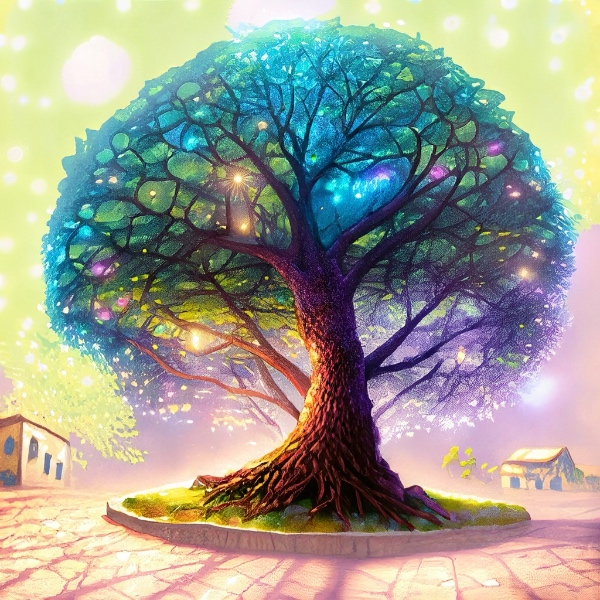
            </div>
            <p>그 이유는 이 나무가 매우 특별한 씨앗에서 자라난 빛나는 열매가 열리는 나무였기 때문이죠.</p>
            <div class="visual">
                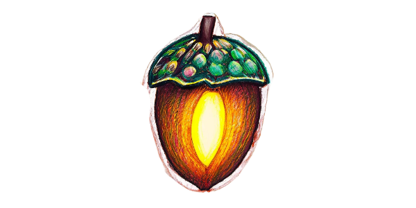
            </div>
            <p>어떤 열매는 왜 하늘은 파란색인지에 대한 이야기를 가지고 있었고, 또 다른 열매는 무지개가 어떻게 만들어지는지에 대한 이야기를 가지고 있었어요. 공룡은 어떻게 생겼는지에 관한 이야기를 담은 열매도 있었습니다.</p>
            <div class="visual">
                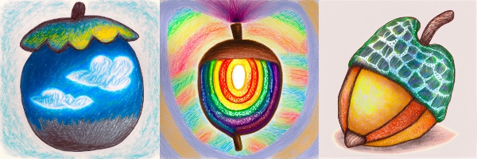
            </div>
            <p>그런데, 나무는 자신이 가진 이야기를 마을 어린이들에게 공유하고 싶어도, 열매를 직접 줄 수가 없었어요. 그래서 똑똑한 방법을 생각해냈죠. 바로 새들의 도움을 받는 것이었습니다.</p>
            <div class="visual">
                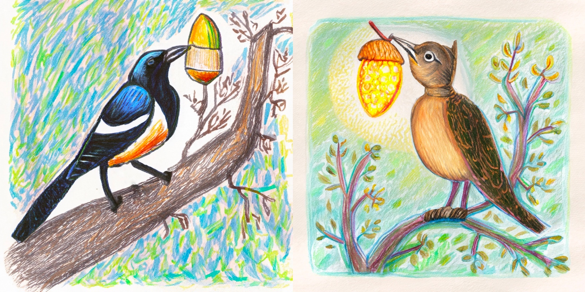
            </div>
            <p>나무가 피워낸 꽃의 향기와 열매의 빛에 모여든 새들은 이야기 조각을 담은 열매를 마을 구석구석에 숨겼어요.</p>
            <div class="visual">
                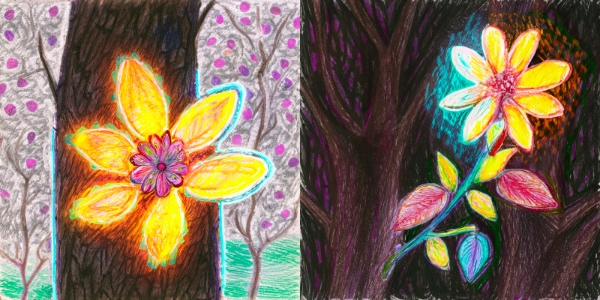
            </div>
            <p>지금도, 그 나무의 이야기는 우리 마을 곳곳에서 찾을 수 있답니다. 이 이야기를 찾는 것은 어렵지 않아요. 그냥 주변을 잘 보면, 그 흔적을 발견할 수 있을 거예요.</p>
            <br>
            <p>그 흔적은 이렇게 생겼답니다.</p>
            <div class="qr">${svg_str}</div>
            <div class="direction">한미유치원 여기저기에 숨어있는 이 흔적을 찾아 나머지 이야기를 완성해 보세요!</div>
        </div>
        `;

        stories['story1'] = `
        <div class="story">
            <p>빛나는 나무가 자신의 지식을 담은 열매를 마을 곳곳에 숨기자, 마을 어린이들이 그것을 찾기 시작했어요. 재미있는 보물찾기 같았죠. 어린이들은 이 열매를 찾아다니면서 서로가 발견한 것을 나누며 놀았어요.</p>
            <div class="visual">
                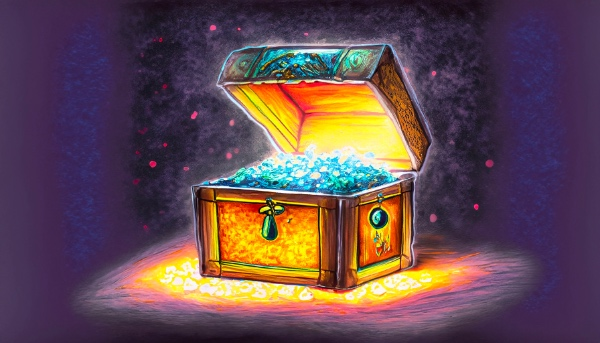
            </div>
            <p>한 어린이는 '왜 꽃들은 다양한 색깔을 가지고 있을까?'라는 이야기를 담은 열매를 찾았어요. 다른 어린이는 '별들은 어떻게 하늘에 붙어있을까?'라는 이야기를 담은 열매를 발견했죠. 어린이들은 찾은 이야기를 서로 나누며, 더 많은 지식을 얻었어요.</p>
            <div class="visual">
                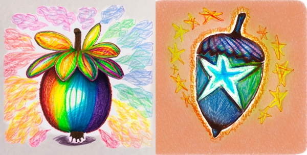
            </div>
            <p>그런데, 어린이들이 알게 된 것은 이것뿐이 아니었어요. 그들은 열매를 찾아다니면서 서로 도와주고, 함께 웃고, 때로는 서로의 열매를 나누기도 했어요. 그래서 어린이들은 서로에 대해 더 알게 되고, 더 사이좋은 친구가 되었답니다.</p>
            <div class="visual">
                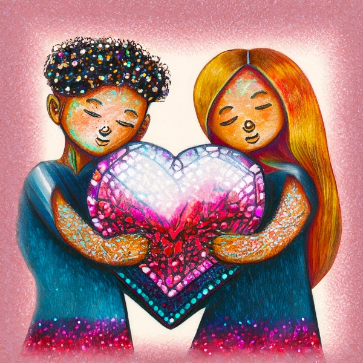
            </div>
        </div>
        `;

        stories['story2'] = `
        <div class="story">
            <p>어린이들이 빛나는 나무의 열매를 찾으면서, 그들은 놀이와 함께 배우는 즐거움을 알게 되었어요. 어떤 어린이는 '왜 눈이 녹을까?'라는 열매를 찾았고, 또 다른 어린이는 '왜 비행기는 하늘에서 떨어지지 않을까?'라는 열매를 찾았어요.</p>
            <div class="visual">
                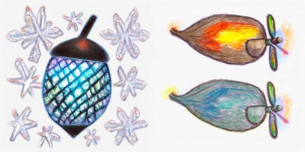
            </div>
            <p>그런데 어린이들은 단순히 열매에 들어있는 이야기를 찾기만 하는 것이 아니었어요. 그들은 찾은 이야기를 가지고 더 많은 이야기를 만들어냈답니다. '왜 눈이 녹을까?'라는 호기심으로부터 어린이들은 자신만의 눈에 관한 이야기를 만들어냈어요. '비행기는 왜 하늘에서 떨어지지 않을까?'라는 호기심으로부터는 자신만의 비행기 이야기를 만들어냈죠.</p>
            <div class="visual">
                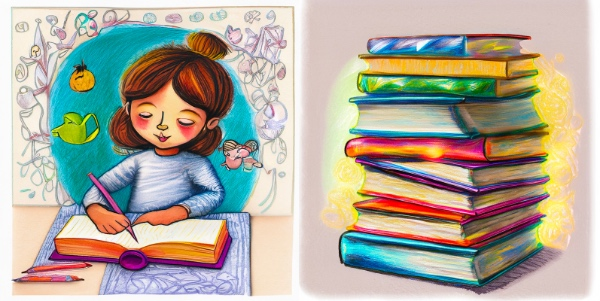
            </div>
            <p>이렇게 어린이들은 서로의 이야기를 듣고, 서로의 이야기에 더해가며, 새로운 이야기를 만들어냈어요. 그들은 이를 통해 새로운 지식을 얻었고, 더 중요한 것은, 함께 노는 즐거움을 배웠답니다.</p>
            <div class="visual">
                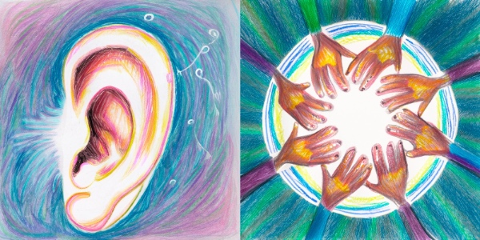
            </div>
            <p>그들은 서로와 함께 놀면서, 서로를 더 잘 이해하고, 새로운 지식을 만들었습니다. 그래서 이 이야기는 '함께 놀면서 배우다 보면 새로운 것을 만들 수 있게 된다'는 이야기랍니다.</p>
            <div class="visual">
                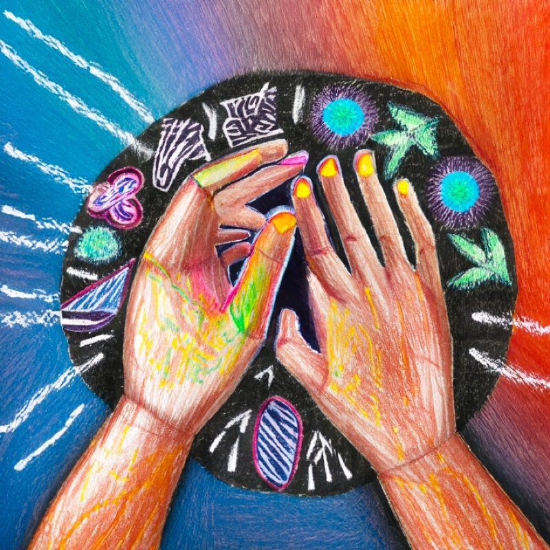
            </div>
        </div>
        `;

        stories['story3'] = `
        <div class="story">
            <p>어느 날, 어린이들은 각자 집에서 더 이상 쓰지 않는, 빛이 약간 흐린 열매들을 손에 쥐고 나무 아래에 모였습니다. 이들은 열매들을 조심스럽게 나무 밑둥에 기대어 놓았어요.</p>
            <div class="visual">
                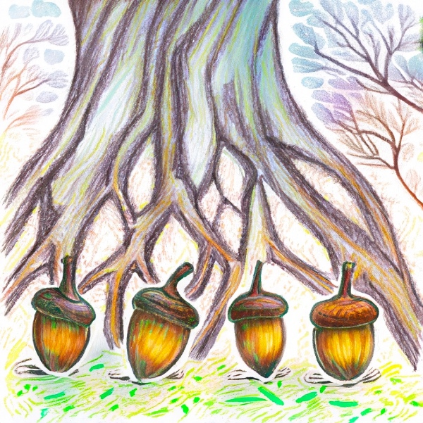
            </div>
            <p>그런데 신기한 일이 일어났습니다. 나무가 조용히 그 열매들을 흡수하기 시작한 것이에요.</p>
            <div class="visual">
                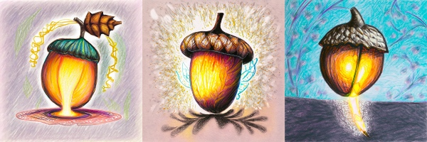
            </div>
            <p>그리고 나무는 그 열매들에서 새롭고 빛나는 열매를 만들어내기 시작했습니다. 이 새로운 열매들은 흐린 열매들에 담겨 있던 이야기와 지식을 더욱 빛나게 담고 있었습니다.</p>
            <div class="visual">
                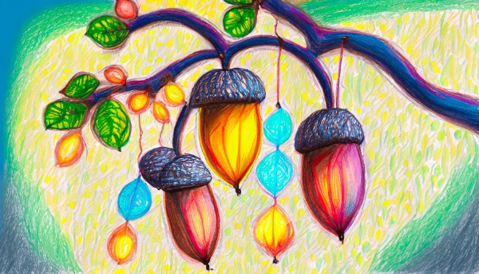
            </div>
            <p>어린이들은 빛이 약해진 열매가 다시 빛나는 새로운 열매로 태어나는 것을 보며 무언가가 오래되었거나 더 이상 쓰이지 않더라도, 그것을 새로운 방법으로 활용하면 멋진 것을 새로 만들어낼 수 있다는 것을 배웠습니다.</p>
            <div class="visual">
                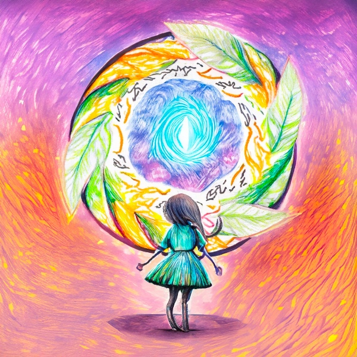
            </div>
            <p>이렇게 어린이들은 다시는 사용하지 않을 것 같던 열매를 활용하여, 새로운 지식과 이야기를 만들어내는 방법을 배웠습니다. 그렇게 마을의 빛나는 나무는 계속해서 자랄 수 있었습니다.</p>
            <div class="visual">
                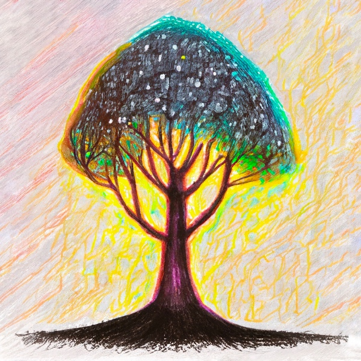
            </div>
        </div>
        `;

        stories['story4'] = `
        <div class="story">
            <p>마을 어린이들은 빛나는 나무의 열매를 찾아다니면서 서로 이야기를 나누었어요. 그들이 찾아낸 이야기들은 모두 다르고, 각각이 특별했죠. 이런 이야기들은 마치 작은 도서관의 책들처럼, 다양한 지식과 경험을 담고 있었어요.</p>
            <div class="visual">
                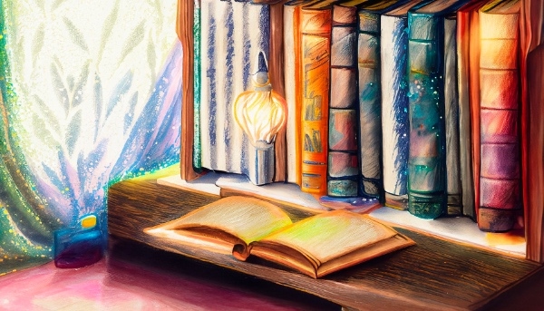
            </div>
            <p>그리고 어린이들은 서로의 이야기를 듣고, 자신의 이야기를 더하면서, 마치 새로운 책을 작은 도서관에 더하는 것처럼, 지식과 지혜를 쌓아가게 되었어요.</p>
            <div class="visual">
                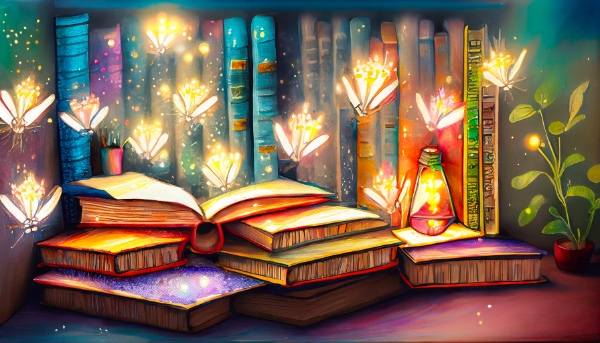
            </div>
            <p>그리고 그들은 이 과정에서 함께하는 것, 함께 배우는 것, 서로에게 배우는 것의 중요성을 깨달았답니다.</p>
            <div class="visual">
                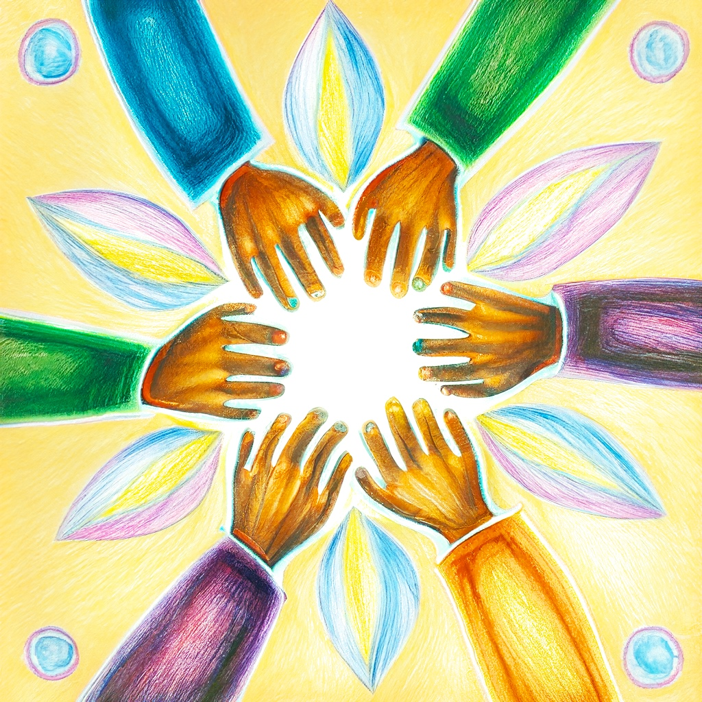
            </div>
            <p>어린이들이 모은 이야기들로 결국 마을에 '작은 도서관'을 만들게 되었어요. 이곳에 어린이들이 모은 지식과 경험, 그리고 함께 만들어낸 이야기를 간직하게 되었죠.</p>
            <div class="visual">
                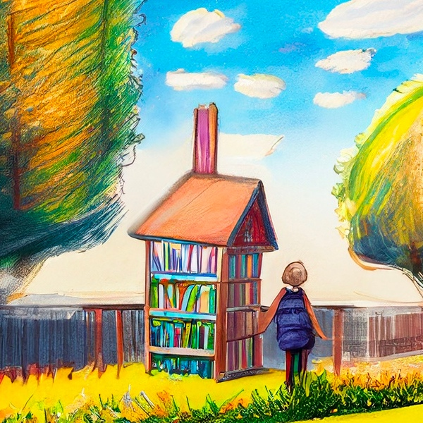
            </div>
            <p>이 작은 도서관은 어린이들이 함께 만들어낸 지식의 보물상자고, 함께하는 즐거움의 집이기도 합니다. 이렇게 어린이들은 꽃과 새의 도움을 받아 빛나는 나무의 열매를 찾아가며, 함께 이야기를 만들어내고, 그 과정에서 함께 배우는 즐거움을 알게 되었답니다.</p>
            <div class="visual">
                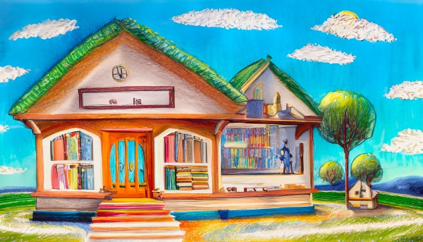
            </div>
            <p>그들의 이야기는 이제 막 시작됐을 뿐입니다.</p>
            <div class="visual">
                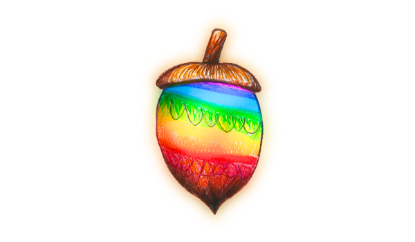
            </div>
        </div>
        `;

        let epilogue = `
        <div class="story">
            <p>이 이야기는 나무와 새들, 그리고 어린이들이 함께 만들어낸 '작은 도서관'의 이야기입니다.</p>
        </div>
        `;
        
        let template = `
        <p class="title">빛나는 나무</p>
        <p class="desc">${intro}</p>

        <hr>
        <p class="subtitle" id="st_story1">서로의 열매가</p>
        <p class="desc" id="story1"></p>

        <hr>
        <p class="subtitle" id="st_story2">호기심에서 이어져</p>
        <p class="desc" id="story2"></p>

        <hr>
        <p class="subtitle" id="st_story3">다시 태어난</p>
        <p class="desc" id="story3"></p>

        <hr>
        <p class="subtitle" id="st_story4">작은 도서관</p>
        <p class="desc" id="story4"></p>

        <hr>
        <p class="subtitle" id="st_epilogue">에필로그</p>
        <p class="desc" id="epilogue"></p>

        <hr>
        <div class="bottom">
            <div class="solve">
                <span class="solve-riddle"><a href="https://forms.gle/gTsfJWWBoKojrBDP8" target="_blank">수수께끼 풀기</a></span>
            </div>
        </div>
        `;
        
        el_content.innerHTML = template;

        el_stories = [
            document.querySelector('#story1'),
            document.querySelector('#story2'),
            document.querySelector('#story3'),
            document.querySelector('#story4'),
        ];

        el_epilogue = document.querySelector('#epilogue');

        for(let el of el_stories) {
            el.innerHTML = `<div class="story"><div class="whisper">( 흔적을 찾길 기다리고 있어요... )</div></div>`;
        }

        el_epilogue.innerHTML = `<div class="story"><div class="whisper">( 모든 흔적을 찾길 기다리고 있어요... )</div></div>`;

        for(let i of [1,2,3,4]) {
            let vt = localStorage.getItem('story' + i);
            if(vt) {
                let [v, t] = vt.split(':');
                if(v === 'found') {
                    el_stories[i - 1].innerHTML = stories['story' + i];
                }
            }
        }

        if(focused) {
            setTimeout(() => {
                document.querySelector(`#${focused}`).innerHTML = stories[focused];
                document.querySelector(`#st_${focused}`).scrollIntoView({ behavior: "smooth", block: "start", inline: "nearest" });
            }, 1000);
        }
        
        let svg = el_content.querySelector('svg');
        svg.setAttribute('width', '100%');
        svg.setAttribute('height', '100%');
        svg.setAttribute('viewBox', '0 0 100 100');
        
        /*
        let img = el_content.querySelector('.visual img');
        img.onload = function() {
            img.style['-webkit-animation'] = 'appear 3s ease-in-out';
            img.style['animation'] = 'appear 3s ease-in-out';
            img.style['visibility'] = 'visible';
        };
        */
        document.querySelector('#listent0').addEventListener('click', () => {
            audio.src = './audio/intro.mp3';
            audio.play();
        });
        
        loop();
    }
    
    let frame_count = 0;
    
    let pxs = [Math.random() * g.canvas.width, Math.random() * g.canvas.width, Math.random() * g.canvas.width];
    let pys = [Math.random() * g.canvas.height, Math.random() * g.canvas.height, Math.random() * g.canvas.height];
    let prs = [10 + Math.random() * g.canvas.height * 0.1, 10 + Math.random() * g.canvas.height * 0.1, 10 + Math.random() * g.canvas.height * 0.1];
    let hue = Math.random() * 360;
    
    function draw(timestamp) {
        if(frame_count < 3000) {
            for(let i = 0; i < 3; i++) {
                if(frame_count % 30 === 0) {
                    pxs[i] = Math.random() * g.canvas.width;
                    pys[i] = Math.random() * g.canvas.height;
                    prs[i] = 10 + Math.random() * g.canvas.height * 0.1;  
                }
                g.beginPath();
                g.arc(pxs[i], pys[i], prs[i], 0, Math.PI*2);
                hue = (Math.sin(timestamp * 0.001) * 0.5 + 0.5) * 360 | 0;
                g.fillStyle = `hsla(${hue}, 100%, 50%, 0.01)`;
                g.fill();
                prs[i] += 1;  
            }
        }
    }
    
    function loop(timestamp) {
        draw(timestamp);
        frame_count += 1;
        requestAnimationFrame(loop);
    }
    
    window.onload = init;
    window.onresize = layout;
</script>